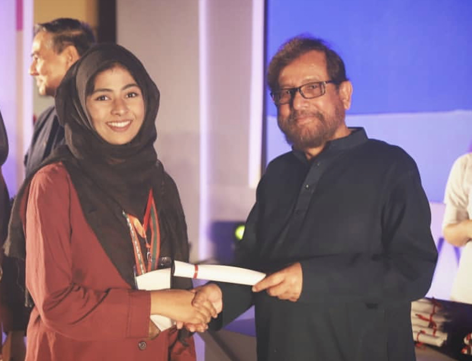

School and Achievements
This picture is from Daily Star Awards 2018 with honourable guest Asaduzzaman Noor.I studied in Manarat Dhaka International School and College, a reputed english medium in Gulshan, Dhaka city for fourteen years of my life, from play group to A levels. I took my A levels and O levels exam under Cambridridge international examinations. Throughout my school life I participated in science and quiz compititions. I chose Scine in 9th grade and selected mostly science subjects during my O levels and A levels. I love mathematics and I would say this was my favourite subjuct during school. Apart from maths I also enjoyed Physics. I feel my interest towards maths and physics urged my to chose Computer Science at university since its the integration of both alongside computing.
I was honoured to recieve Daily Star Award for both my O level and A level results. Daily Star Award is the most prestigious award for english medium students in Bangladesh where they celebrate students achieving extraordinary results in their O and A levels. Apart from that I was also awarded 50% tution fee waiver from my school for my performance in O levels. From Brac University I was awarded 50% schoolarship based on my previous academic results of O and A levels.